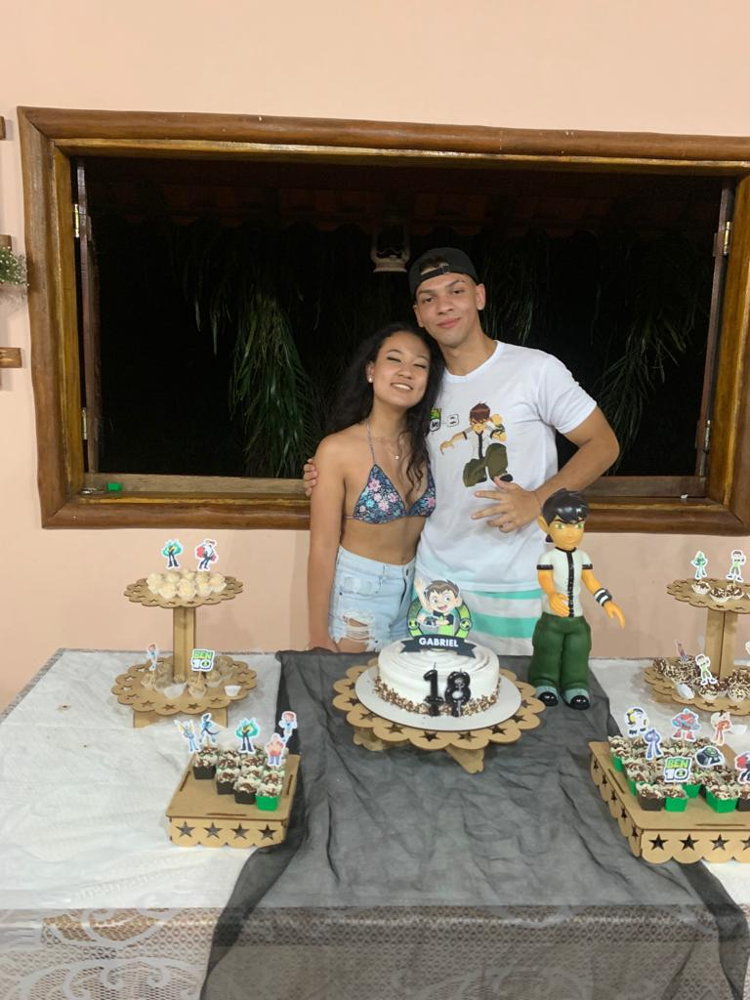
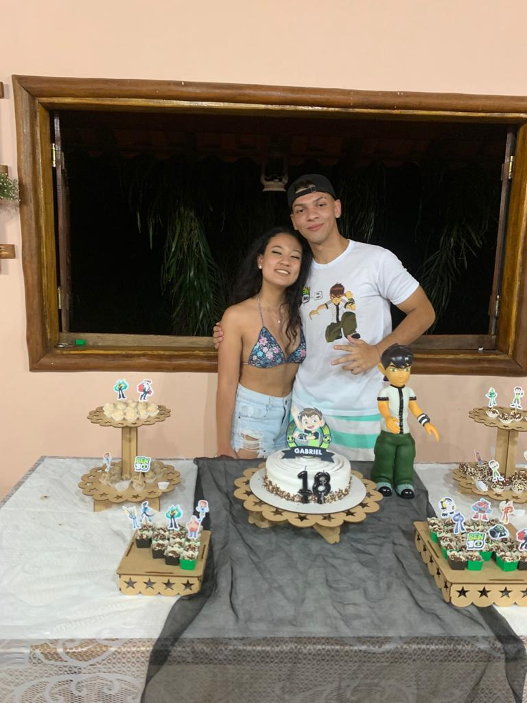
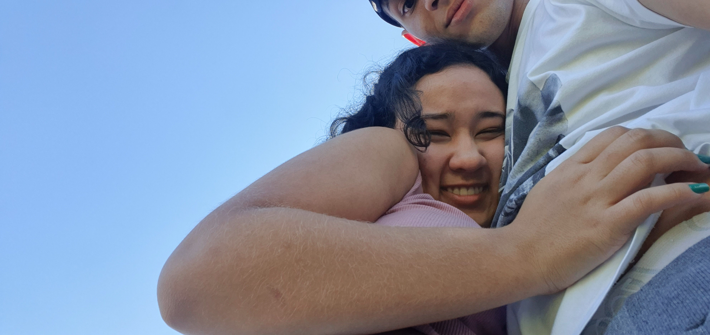
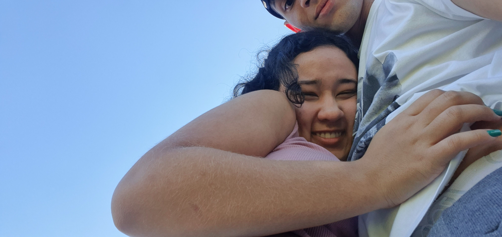
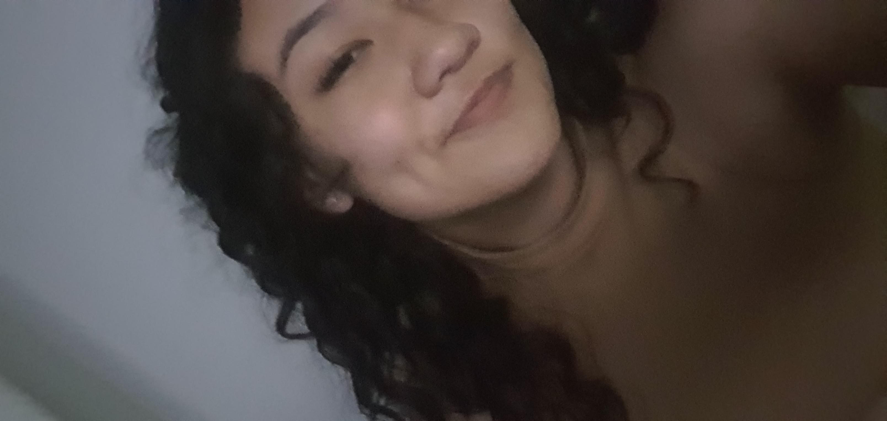
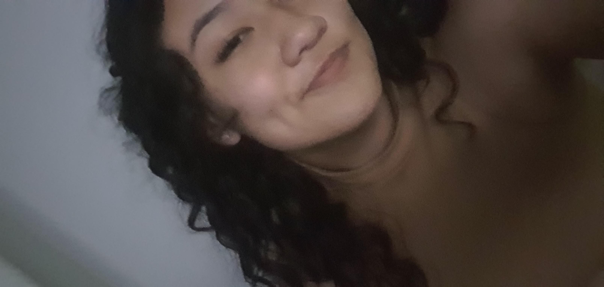
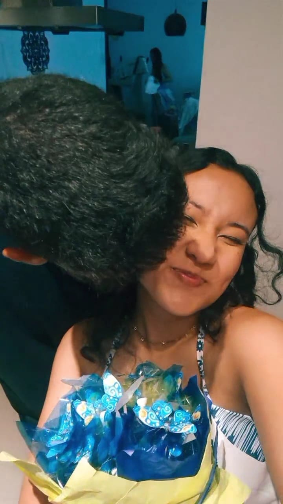
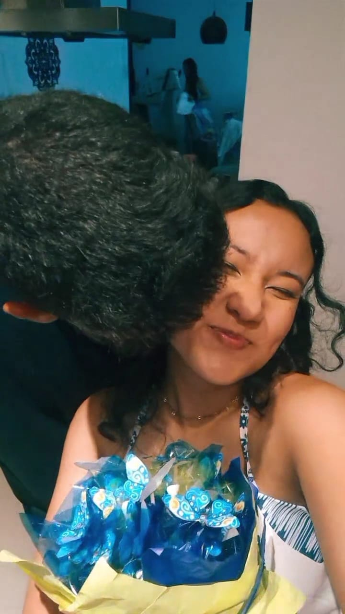
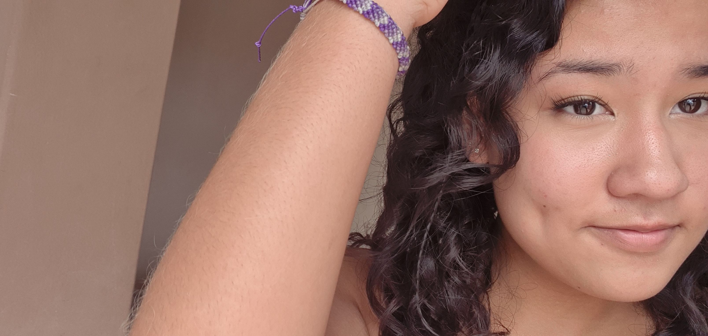
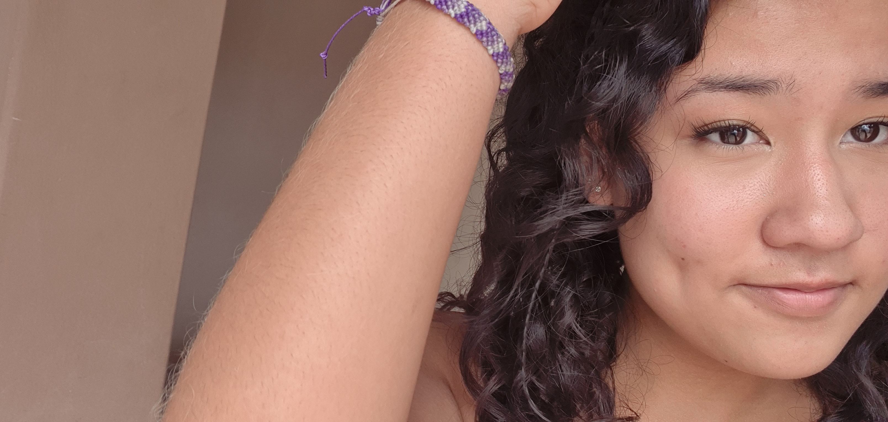

O mundo não para, o tempo não volta, mas eu sei que é ao seu lado que eu quero estar. O nosso amor transcende o tempo, o espaço e o lugar. Nem mesmo se usarmos a
lógica, ela vai conseguir explicar a conexão que nós temos. Desde que te vi naquele casamento, com aquele vestido preto e com aquele sorriso encantador, com aquela risada perfeita
(Meu bolinho de arroz, eu confesso que estava dando em cima de vc kskksksk), a minha vida nunca mais foi a mesma (foi quando você começou a aparecer nos meus sonhos). Sentia que algo faltava, que precisava de algo a mais... encontrei isso em você
no dia 16/10/2022. Percebi que estava mais do que completo e comecei a ter um sentimento de paz. Eu tinha um motivo para sorrir, e com o passar dos dias, eu não
conseguia ficar longe dos teus olhos. Olhar para eles me recarrega, é como se estivesse olhando para um lugar aconchegante, cheio de sonhos, vontades e desejos profundos
...Dizem que os olhos são a porta para a alma. Posso entrar na sua e nunca mais sair??? posso te ajudar a realizar os seus desejos??
(quando ler isso responde no whatsüòú).
Depois de mais de um ano de conversas diárias, te trazer felicidade e estar ao seu lado, mesmo que seja só um pouco se tornou um dos meus objetivos de vida. Afinal,
o que seria de mim sem a minha japinha sorridente e alegre, acredito que no nosso estagio atual posso dizer que ja estamos conectados e não é apenas por aquele fio
vermelho do destino que conecta duas pessoas quando elas nascem, mas sim pelo fato de nos conhecermos tão bem que nao precisamos mais de palavras para nos comunicarmos,
por sentirmos quando o outro não esta bem mesmo distante, por nos sentirmos confortaveis para compartilhar os nossos segredo mais profundos e que ninguem mais sabe. Acredito
que isso seja o verdadeiro signficado de um relacionamento, não só isso mas também o apoio, a confiança, a vontade em fazer dar certo, o desejo pelo outro e a chama que cresce
dentro do nosso peito que faz o nosso amor ser sincero e verdadeiro, sem joguinhos, sem piadinhas.
Uma coisa que sempre me encatou foi te observar,não apenas observar igual olhamos todas as coisas ao nosso redor, mas sim oberservar cada detalhe que existe em você, cada pequena coisinha, cada fio de cabelo, cada pinta, cada cilios e acima sentir o seu cheiro
(to me sentindo meio psicopata kskkskskkskskskksks). Prestar atenção em você enquanto eu te via evoluindo a cada dia que passa , sempre foi e será mágico, não somos mais o mesmo gabriel e a mesma clara do final de 2022, mas posso te dizer com toda a certeza que
eu me apaixonei denovo e denovo pela nova pessoa que você se tornou e se tornará...Sempre te disse que você é especial, que você é unica, a forma como o seus olhos
brilham é diferente, você tem garra, você é batalhadora, você tem uma vontade incrivel. Você me inspira e espero que eu te inspire também.
Então meu amor, segura minha mão até o fim e me veja em seu futuro como eu te vejo no meu! TE AMOOO!!!!
Vá para o whatsapp!!!!

 

 



 



 


 
